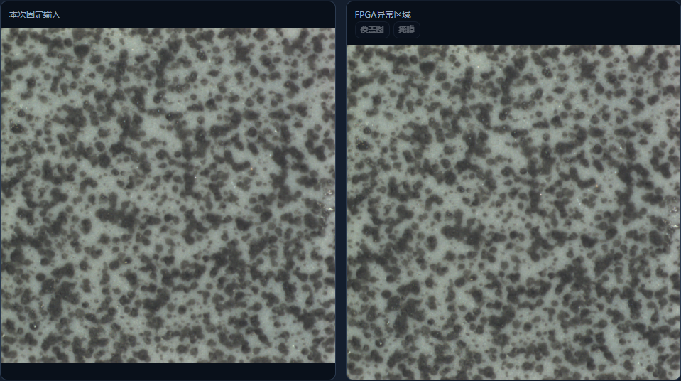
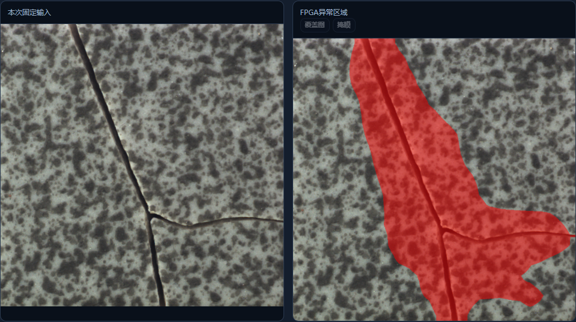

本轮有限测试全部通过，保持原算法、BIT、ELF和模型。用户报告更换USB线；未测量电压电流，也没有据此唯一确定之前POR的电气根因。50MHz候选仍不作为交付版本。
| 项目 | 结果 |
|---|---|
| 117张公开实拍开发图 | 全部分数、掩膜和元数据逐值复现，帧序号除外；33正常零误报、84缺陷检出；不是独立准确率 |
| 耗时 | PL内核均时124.72ms，传图加检测均时501.79ms，连接建立重试0次；无额外图间等待 |
| 连续固定图硬件计算 | 请求200次，含排空共201次完成，约25.06秒；不是新视频帧率 |
| 参照与闭环接口 | 22次实板回放、38次拒绝操作通过；包含一次有意注入的参照变更故障 |
| 100个完整停检周期 | 50次放行、50次隔离，重复分数掩膜一致，帧序号连续；无新增故障，不自动重放或重新下载 |
| 周期耗时 | 均时1.220秒，含0.25秒脚本模拟复核等待、API及证据落盘；不含真实人工或机械动作 |
| 启动和复位 | 全程启动编号2243361847；结束REBOOT_STATUS=0x0000200a，与清除历史后基线相同，未记录新复位原因位；FCLK0=0x00200500 |
| 正式报告 | 按原比赛模板更新10页，逐页渲染和检查，保留整机实拍位置供参赛者补充 |
整组测试约310秒。这不是全天长稳、连续HDMI、实体工件或未知彩绘材质验收。复核由脚本依据公开标签模拟，所有图像检测计算仍在PL。材质标定是对已部署参照的工位核验，不会自动训练新花色。
整组证据 · 结束时钟与复位记录 · 100周期完整审计 · 之前失败记录
图中照片来自MVTec AD公开实拍开发集；右图显示PL返回的区域。截图回放也由脚本模拟复核。

